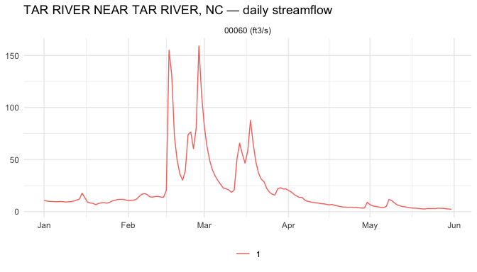

USGS streamgages: bounded discovery and mapping
Source:vignettes/usgs-streamgages.Rmd
usgs-streamgages.RmdThe USGS
waterdata OGC API is a clean, real-world EDR endpoint with one
collection (daily-edr) that exposes every USGS station’s
daily-value time series. It’s a good target for learning
edr4r because the API surface is small and the data is
familiar (stream gauges).
This vignette walks through a typical streamgage exploration: discover what’s on offer, follow every advertised location page inside a small northern North Carolina Piedmont study area, pull recent streamflow for each station, and render an interactive map. The displayed results were precomputed from the live USGS endpoint so package checks remain offline.
1. Connect and discover collections
library(edr4r)
library(ggplot2)
usgs <- edr_client("https://api.waterdata.usgs.gov/ogcapi/beta")
edr_collections(usgs)[, c("id", "title", "data_queries")]
#> # A tibble: 1 × 3
#> id title data_queries
#> <chr> <chr> <list>
#> 1 daily-edr Daily values environmental data retrieval (EDR) <chr [1]>USGS exposes a single collection, daily-edr. The
data_queries column tells us what query verbs it
supports:
edr_collections(usgs)$data_queries[[1]]
#> [1] "locations"Just locations. No cube, no
area, no position. That matters:
edr_explore() will fall back to per-station fetches instead
of one bulk call. For a handful of gauges that’s fine; for thousands it
would be slow. The WWDH rise-edr collection in
vignette("getting-started") shows the bulk-fetch path
against a richer server.
Discovering parameters
edr_parameters() reads the parameter_names
block from the collection document – but USGS doesn’t populate it. Use
edr_queryables() instead to see what filter properties the
server exposes:
q <- edr_queryables(usgs, "daily-edr")
names(q$properties)
#> [1] "geometry" "id"
#> [3] "unit_of_measure" "parameter_name"
#> [5] "parameter_code" "statistic_id"
#> [7] "hydrologic_unit_code" "state_name"
#> [9] "last_modified" "begin"
#> [11] "end" "computation_period_identifier"
#> [13] "computation_identifier" "thresholds"
#> [15] "sublocation_identifier" "primary"
#> [17] "monitoring_location_id" "web_description"
#> [19] "parameter_description" "parent_time_series_id"parameter_code is the filter you’d pass as
parameter_name = in a query. USGS uses the standard NWIS parameter
codes – a few common ones for streamgages:
| Code | Meaning | Unit |
|---|---|---|
00060 |
Discharge (streamflow) | ft³/s |
00065 |
Gage height (stage) | ft |
00010 |
Water temperature | °C |
00400 |
pH | std units |
00095 |
Specific conductance | µS/cm |
The rest of this vignette uses 00060 – daily mean
streamflow.
2. Find streamgages in a bounded study area
A compact box around several Tar River tributaries keeps this example small while still forcing more than one server page:
piedmont_bbox <- c(-78.60, 36.04, -78.28, 36.22)
# minx miny maxx maxyUSGS paginates its location index with an opaque cursor. Opt into
bounded pagination to make “every gauge” explicit; limit is
the page size, while the two client-side caps guard the total pull. With
sf installed
the combined response is an sf object with one point per
gauge:
gauges <- edr_locations(
usgs, "daily-edr",
bbox = piedmont_bbox,
limit = 2,
paginate = TRUE,
max_pages = 10,
max_features = 20
)
nrow(gauges)
#> [1] 5
gauges[, c("id", "monitoring_location_name", "county_name", "drainage_area")]
#> Simple feature collection with 5 features and 4 fields
#> Geometry type: POINT
#> Dimension: XY
#> Bounding box: xmin: -78.58306 ymin: 36.05404 xmax: -78.29611 ymax: 36.2132
#> Geodetic CRS: WGS 84
#> # A tibble: 5 × 5
#> id monitoring_location_name county_name drainage_area
#> <chr> <chr> <chr> <dbl>
#> 1 USGS-02081500 TAR RIVER NEAR TAR RIVER, NC Granville … 167
#> 2 USGS-02081740 TAR RIVER AT LOUISBURG, NC Franklin C… 429
#> 3 USGS-02081747 TAR R AT US 401 AT LOUISBURG, NC Franklin C… 427
#> 4 USGS-02081800 CEDAR CREEK NEAR LOUISBURG, NC Franklin C… 47.8
#> 5 USGS-0208273070 DEVILS CRADLE C AT NC 39 NR KEARNE… Franklin C… 2.89
#> # ℹ 1 more variable: geometry <POINT [°]>Each gauges$id is in the form
"USGS-02087500" (agency code + the familiar 8-digit NWIS
site number). That’s what you pass back as location_id = to
a query.
3. Pull streamflow for one station
A USGS quirk to flag up front: when you ask for a specific station
with edr_location(), the server ignores the
datetime interval and just returns the most recent
limit records (limit defaults to 10).
To get five months of daily data, pass a limit that
comfortably covers the window – say 200 days – and filter to the target
window client-side.
example_id <- gauges$id[[1]]
example_name <- gauges$monitoring_location_name[[1]]
resp <- edr_location(
usgs, "daily-edr",
location_id = example_id,
parameter_name = "00060",
limit = 200
)
df <- covjson_to_tibble(resp)
# Filter to the Jan–May 2026 window we care about
df_jan_may <- df[df$datetime >= as.POSIXct("2026-01-01", tz = "UTC") &
df$datetime <= as.POSIXct("2026-05-31", tz = "UTC"), ]
head(df_jan_may[, c("datetime", "value", "unit")])
#> # A tibble: 6 × 3
#> datetime value unit
#> <dttm> <dbl> <chr>
#> 1 2026-05-31 00:00:00 2.21 ft3/s
#> 2 2026-05-30 00:00:00 2.53 ft3/s
#> 3 2026-05-29 00:00:00 2.66 ft3/s
#> 4 2026-05-28 00:00:00 3.14 ft3/s
#> 5 2026-05-27 00:00:00 3.13 ft3/s
#> 6 2026-05-26 00:00:00 3.29 ft3/sedr_plot() is a small ggplot wrapper for the tidy
tibble:

plot of chunk plot-one-gauge
If you already know the station IDs, the public batch helper performs the same bounded per-station workflow without discovering or parallelizing anything:
all_streamflow <- edr_location_batch(
usgs, "daily-edr",
location_id = gauges$id,
parameter_name = "00060",
limit = 200,
max_requests = nrow(gauges),
on_error = "collect",
progress = FALSE
)
all_streamflow$requests
all_streamflow$data
all_streamflow$errorsUSGS beta currently ignores datetime on these individual
location queries and returns the latest records. Do not add
chunk here expecting historical windows: chunking is
intended for EDR implementations that honor the requested interval.
4. Map every gauge with per-station popups
edr_explore() does the per-station loop and hands the
results to edr_map() in one call. Each marker becomes an
inline plot + CSV download for that gauge.
m <- edr_explore(
usgs, "daily-edr",
bbox = piedmont_bbox,
parameter_name = "00060",
record_limit = 200, # ~6 months of daily values per station
popup = "plot+csv",
label_col = "monitoring_location_name",
quiet = TRUE
)Print m in an interactive R session to open the map.
Click any blue marker to open the popup; its Jan–May 2026 streamflow
plot is inline, and the “Download CSV” link delivers that gauge’s
series.
To write the same map to a standalone HTML file, use
edr_save_html():
edr_save_html(m, "piedmont-streamgages.html")A few things worth knowing about the USGS endpoint
-
daily-edronly advertises thelocationsquery. The other EDR verbs (cube,area,position, …) return HTTP errors. The per-station fallback works fine for tens of gauges; for hundreds consider pre-filtering aggressively withbbox =. -
datetimeis not honoured on/locations/{id}requests – the server returns the latestlimitrecords regardless. Pass enoughlimitto cover your window, then filter client-side. - The station id format is
"USGS-<NWIS-id>". The bare NWIS id ("02087500") doesn’t work; pass the full"USGS-..."form, which is whatedr_locations()returns in itsidcolumn. - The 44-column attribute table on
gaugescarries a lot of useful metadata (drainage_area,state_name,hydrologic_unit_code,altitude, …). Use it to filter or label before mapping. - Pass
label_col = "monitoring_location_name"toedr_map()so popup titles read “BUFFALO CREEK NEAR FALLS, NC” instead of the rawUSGS-02087183id.
See also
-
vignette("cross-endpoint-water-context")– place a USGS Hoover Dam discharge series beside WWDH Lake Mead storage and a Met Office population grid. -
vignette("getting-started")– same workflow against the Western Water Datahub, which advertisescubefor fast bulk fetches. - The USGS NWIS
parameter code dictionary for picking the right
parameter_code.